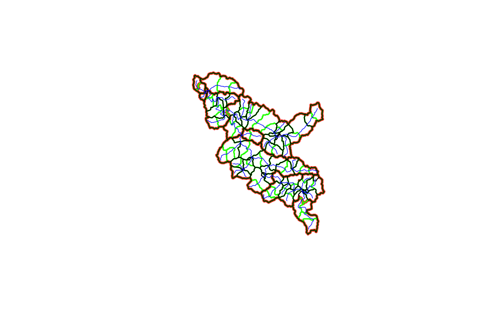
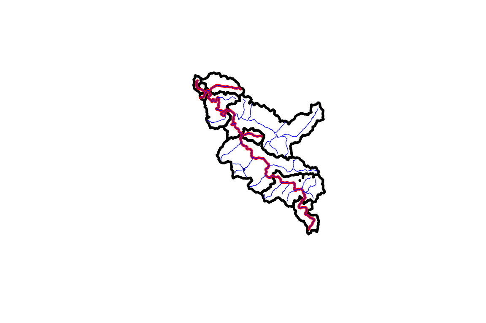

Refactor Catchments
dblodgett@usgs.gov
Source:vignettes/refactor_catchment.Rmd
refactor_catchment.RmdRefactoring Catchments with NHDPlusTools
Load Network and Refactor
For this example, we will use some data available from the nhdplusTools package for testing and examples. fac_sample, fdr_sample, flowline_sample, catchment_sample are all included as sample data in nhdplusTools.
Before we can do anything with the catchments, we need to run the NHDPlus Refactor workflow documented over in vignette("refactor_nhdplus").
library(sf)
#> Linking to GEOS 3.8.1, GDAL 3.0.4, PROJ 7.0.0
library(nhdplusTools)
#> USGS Support Package: https://owi.usgs.gov/R/packages.html#support
library(hyRefactor)
#> USGS Support Package: https://owi.usgs.gov/R/packages.html#support
library(raster)
#> Loading required package: sp
source(system.file("extdata", "walker_data.R", package = "hyRefactor"))
#> rgdal: version: 1.4-8, (SVN revision 845)
#> Geospatial Data Abstraction Library extensions to R successfully loaded
#> Loaded GDAL runtime: GDAL 3.0.4, released 2020/01/28
#> Path to GDAL shared files:
#> GDAL binary built with GEOS: TRUE
#> Loaded PROJ.4 runtime: Rel. 7.0.0, March 1st, 2020, [PJ_VERSION: 700]
#> Path to PROJ.4 shared files: (autodetected)
#> Linking to sp version: 1.4-1
ref <- tempfile(fileext = ".gpkg")
rec <- tempfile(fileext = ".gpkg")
refactor_nhdplus(nhdplus_flines = walker_flowline,
split_flines_meters = 2000,
collapse_flines_meters = 1000,
collapse_flines_main_meters = 1000,
split_flines_cores = 2,
out_refactored = ref,
out_reconciled = rec,
three_pass = TRUE,
purge_non_dendritic = FALSE,
warn = FALSE)
flowline_ref <- read_sf(ref)
flowline_rec <- read_sf(rec)Let’s start by looking at a single sample catchment. In the first plot, you can see the input is a single polygon and a set of catchment flowlines. For reference, the Flow Direction Raster (FDR) and Flow Accumulation Raster (FAC) are also plotted.
sample_catchment <- dplyr::filter(walker_catchment, FEATUREID == 5329435)
sample_flowline <- dplyr::filter(flowline_ref, as.integer(COMID) == 5329435)
plot(st_geometry(sample_catchment))
plot(sample_flowline["COMID"], add = TRUE)
raster::plot(walker_fdr)
raster::plot( walker_fac)
Now we can run the split_catchment_divide() function which is designed to take one catchment and its associated (split) flowlines. The split flowlines are the “refactored” but not “reconciled” output of the nhdplus_refactor() function we ran above. Here we run the split_catchment() function and plot up the resulting data to show what it did.
split_cat <- split_catchment_divide(sample_catchment, sample_flowline, walker_fdr, walker_fac)
#> Loading required namespace: rgeos
plot(st_geometry(split_cat), col = NA, border = "red")
plot(st_geometry(sample_catchment), add = TRUE)
plot(sample_flowline["COMID"], lwd = 2, add= TRUE)
As you can see, the flowline in question was split into five pieces by nhdplus_refactor() and the cooresponding catchment (black) was similarly broken up into 5 sub-catchments (red).
The split_catchment_divide() function can be run against a set of catchments using the reconcile_catchment_divides() function. This functiona can call split_catchment() in parallel, unions catchments according to the output of nhdplus_refactor(), and assembles the results back into an sf data.frame.
split_cats <- reconcile_catchment_divides(catchment = walker_catchment,
fline_ref = flowline_ref,
fline_rec = flowline_rec,
fdr = walker_fdr,
fac = walker_fac,
para = 4)
plot(st_geometry(split_cats), col = NA, border = "red")
plot(st_geometry(walker_catchment), col = NA, border = "black")
plot(st_geometry(split_cats), col = NA, border = "red")
plot(st_geometry(walker_catchment), col = NA, border = "black", add = TRUE)
Aggregation
With our flowline network and catchments all refactored and the geometry reconciled, we could also aggregate the resulting network to a selected set of outlet locations.
outlets <- data.frame(ID = c(31, 3, 5, 1, 45, 92),
type = c("outlet", "outlet", "outlet", "terminal", "outlet", "outlet"),
stringsAsFactors = FALSE)
aggregated <- aggregate_catchments(flowpath = flowline_rec,
divide = split_cats,
outlets = outlets)
#> Fixing 1 missing outlets.
#> 10 of 10
plot(aggregated$cat_sets$geom, lwd = 3, border = "red")
plot(split_cats$geom, lwd = 1.5, border = "green", col = NA, add = TRUE)
plot(walker_catchment$geom, lwd = 1, add = TRUE)
plot(walker_flowline$geom, lwd = .7, col = "blue", add = TRUE)
#'
plot(aggregated$cat_sets$geom, lwd = 3, border = "black")
plot(aggregated$fline_sets$geom, lwd = 3, col = "red", add = TRUE)
plot(walker_flowline$geom, lwd = .7, col = "blue", add = TRUE)
Identifiers
So you want to know how the identifiers from the original NHDPlus Catchments relate to the output? Let’s look at what’s in the output.
(input_ids <- walker_flowline$COMID)
#> [1] 5329303 5329293 5329305 5329317 5329315 5329339 5329343 5329357 5329365
#> [10] 5329373 5329385 5329821 5329395 5329397 5329389 5329435 5329313 5329311
#> [19] 5329817 5329323 5329325 5329327 5329347 5329291 5329363 5329819 5329359
#> [28] 5329333 5329371 5329375 5329377 5329379 5329399 5329405 5329427 5329413
#> [37] 5329419 5329391 5329407 5329387 5329415 5329355 5329337 5329335 5329345
#> [46] 5329341 5329321 5329841 5329815 5329319 5329309 5329307 5329299 5329297
#> [55] 5329295 5329849 5329393 5329871 5329383 5329847 5329845 5329843
(refactored_ids <- flowline_rec$ID)
#> [1] 1 2 3 4 5 6 7 8 9 10 11 12 13 14 15 16 17 18 19 20 21 22 23 24 25
#> [26] 26 27 28 29 30 31 32 33 34 35 36 37 38 39 40 41 42 43 44 45 46 47 48 49 50
#> [51] 51 52 53 54 55 56 57 58 59 60 61 62 63 64 65 66 67 68 69 70 71 72 73 74 75
#> [76] 76 77 78 79 80 81 82 83 84 85 86 87 88 89 90 91 92 93
(refactored_id_mapping <- flowline_rec$member_COMID)
#> [1] "5329303" "5329293,5329305.3"
#> [3] "5329343" "5329373,5329843"
#> [5] "5329385" "5329821"
#> [7] "5329397" "5329389,5329435.5"
#> [9] "5329313" "5329311"
#> [11] "5329323,5329325,5329327,5329321" "5329363"
#> [13] "5329379,5329399" "5329405"
#> [15] "5329391,5329393" "5329407"
#> [17] "5329355" "5329335"
#> [19] "5329341" "5329299"
#> [21] "5329297" "5329849,5329383.2"
#> [23] "5329871,5329383.1" "5329847"
#> [25] "5329845,5329415.2" "5329305.1"
#> [27] "5329305.2" "5329317.1"
#> [29] "5329317.2" "5329317.3"
#> [31] "5329315.1" "5329315.2"
#> [33] "5329339.1" "5329339.2"
#> [35] "5329339.3" "5329357.1"
#> [37] "5329357.2" "5329365.1"
#> [39] "5329365.2" "5329395.1"
#> [41] "5329395.2" "5329435.1"
#> [43] "5329435.2" "5329435.3"
#> [45] "5329435.4" "5329817.1"
#> [47] "5329817.2" "5329817.3"
#> [49] "5329347.1" "5329347.2"
#> [51] "5329291.1" "5329291.2"
#> [53] "5329291.3" "5329819.1"
#> [55] "5329819.2" "5329359.1"
#> [57] "5329359.2" "5329359.3"
#> [59] "5329333.1" "5329333.2"
#> [61] "5329371.1" "5329371.2"
#> [63] "5329371.3" "5329375.1"
#> [65] "5329375.2" "5329377.1"
#> [67] "5329377.2" "5329427.1"
#> [69] "5329427.2" "5329427.3"
#> [71] "5329413.1" "5329413.2"
#> [73] "5329419.1" "5329419.2"
#> [75] "5329387.1" "5329387.2"
#> [77] "5329415.1" "5329337.1"
#> [79] "5329337.2" "5329345.1"
#> [81] "5329345.2" "5329841.1"
#> [83] "5329841.2" "5329815.1"
#> [85] "5329815.2" "5329319.1"
#> [87] "5329319.2" "5329309.1"
#> [89] "5329309.2" "5329307.1"
#> [91] "5329307.2" "5329295.1"
#> [93] "5329295.2"
(aggregated_ids <- aggregated$cat_sets$ID)
#> [1] 92 79 93 93 53 53 45 5 3 31 2 2 1
(aggregated_id_mapping <- aggregated$cat_sets$set)
#> [[1]]
#> [1] 92
#>
#> [[2]]
#> [1] 78 79
#>
#> [[3]]
#> [1] 93
#>
#> [[4]]
#> [1] 93
#>
#> [[5]]
#> [1] 51 52 53
#>
#> [[6]]
#> [1] 51 52 53
#>
#> [[7]]
#> [1] 42 43 44 45
#>
#> [[8]]
#> [1] 6 7 8 15 16 22 23 40 41 68 69 70 71 72 73 74 75 76 5
#>
#> [[9]]
#> [1] 4 12 13 14 17 24 25 36 37 38 39 54 55 56 57 58 61 62 63 64 65 66 67 77 3
#>
#> [[10]]
#> [1] 9 10 11 18 19 33 34 35 46 47 48 49 50 80 81 82 83 84 85 86 87 88 89 90 91
#> [26] 31
#>
#> [[11]]
#> [1] 20 21 26 27 28 29 30 32 59 60 2
#>
#> [[12]]
#> [1] 20 21 26 27 28 29 30 32 59 60 2
#>
#> [[13]]
#> [1] 1This may look like a complicated mess but there’s structure here. Stepping through the identifiers, we have:
- NHDPlusV2 COMIDs (shared between catchment divides and flowlines)
- Refactored Catchment Identifiers (shared between catchment divides and flowpaths)
There are two caveats here.
- Because the source NHDPlusV2 catchments were split, the relationship between refactored catchments and source catchments requires a sequence (.1, .2, .. .10, etc. – upstream to downstream) to differentiate the parts.
- Aggregated catchments use the identifer of the outlet catchment.
Given these caveats, we can build a complete lookup table from source catchment to output aggregate identifier.
refactor_lookup <- dplyr::select(st_drop_geometry(flowline_rec), ID, member_COMID) %>%
dplyr::mutate(member_COMID = strsplit(member_COMID, ",")) %>%
tidyr::unnest(cols = member_COMID) %>%
dplyr::mutate(NHDPlusV2_COMID = as.integer(member_COMID)) %>% # note as.integer truncates
dplyr::rename(reconciled_ID = ID)
aggregate_lookup_fline <- dplyr::select(st_drop_geometry(aggregated$fline_sets), ID, set) %>%
tidyr::unnest(cols = set) %>%
dplyr::rename(aggregated_flowline_ID = ID, reconciled_ID = set)
aggregate_lookup_catchment <- dplyr::select(st_drop_geometry(aggregated$cat_sets), ID, set) %>%
tidyr::unnest(cols = set) %>%
dplyr::rename(aggregated_catchment_ID = ID, reconciled_ID = set)
(lookup_table <- tibble::tibble(NHDPlusV2_COMID = input_ids) %>%
dplyr::left_join(refactor_lookup, by = "NHDPlusV2_COMID") %>%
dplyr::left_join(aggregate_lookup_fline, by = "reconciled_ID") %>%
dplyr::left_join(aggregate_lookup_catchment, by = "reconciled_ID"))
#> # A tibble: 145 x 5
#> NHDPlusV2_COMID reconciled_ID member_COMID aggregated_flowl… aggregated_catc…
#> <int> <dbl> <chr> <dbl> <dbl>
#> 1 5329303 1 5329303 1 1
#> 2 5329303 1 5329303 1 1
#> 3 5329293 2 5329293 2 2
#> 4 5329293 2 5329293 2 2
#> 5 5329293 2 5329293 2 2
#> 6 5329293 2 5329293 2 2
#> 7 5329305 2 5329305.3 2 2
#> 8 5329305 2 5329305.3 2 2
#> 9 5329305 2 5329305.3 2 2
#> 10 5329305 2 5329305.3 2 2
#> # … with 135 more rowsTa Da!! Have fun and report bugs here.